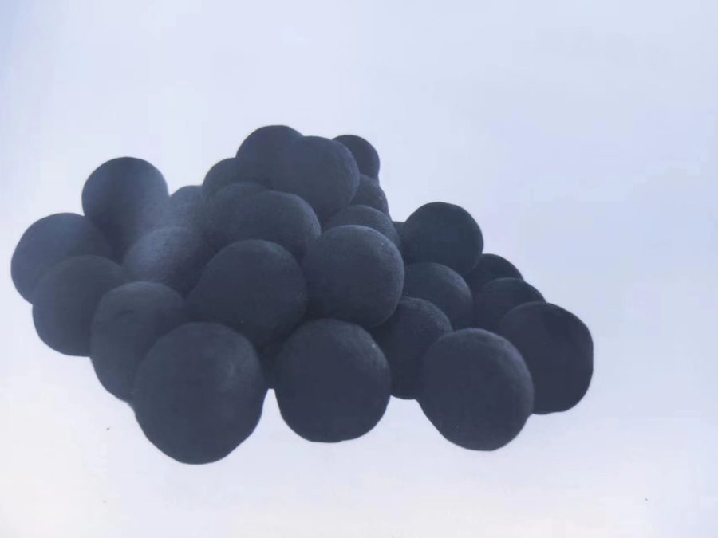
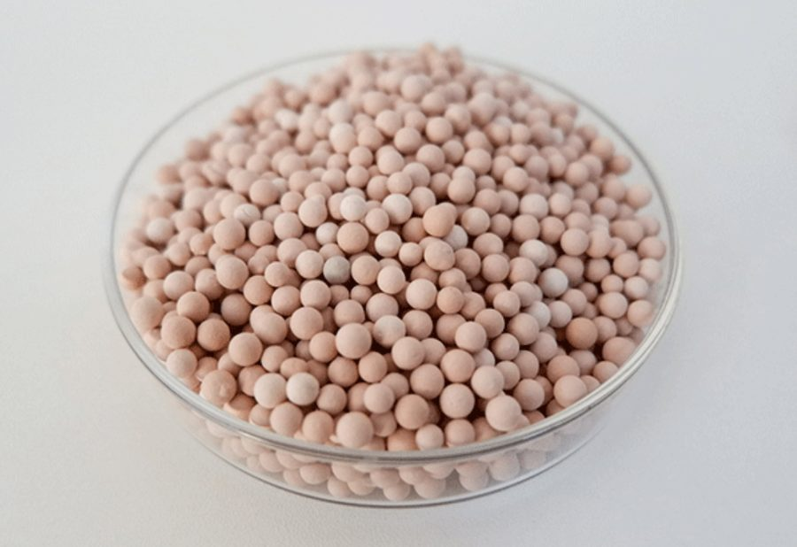

FCM催化自电解技术简介、 SAO3臭氧催化氧化技术简介
FCM催化自电解技术简介催化自电解（铁碳微电解）
是基于电化学中的原电池反应。在废水PH=3~4的条件下，当铁和碳
浸入电解质溶液中时，由于Fe和C之间存在1.2V的电极电位差，因而会形成无数的微电池系统,在其作用空间构成一个电场。阳极反应产生的新生态二价铁离子具有较强的还原能力，可使某些有机物还原，也可使某些不饱和基团(如羧基—COOH、偶氮基-N＝N-
)的双键打开，使部分难降解环状和长链有机物分解成易生物降解的小分子有机物而提高可生化性。此外，二价和三价铁离子是良好的絮凝剂，特别是新生的二价铁离子具有更高的吸附-絮凝活性，调节废水的pH可使铁离子变成氢氧化物的絮状沉淀，吸附污水中的悬浮或胶体态的微小颗粒及有机高分子，可进一步降低废水的色度，同时去除部分有机污染物质使废水得到净化。阴极反应产生大量新生态的[H]和[O]，在偏酸性的条件下，这些活性成分均能与废水中污染物发生氧化还原反应，使环状和长链有机物发生开环
断链等反应，提高废水的可生化性。
催化自电解技术是目前处理高浓度、难降解、难生化有机废水的一种理想工艺，其工作原理基于电化学氧化—还原反应以及絮凝沉淀的共同作用，该法具有适用范围广、处理效果好、成本低廉、操作维护方便，不需消耗电力资源等优点。
FCM催化自电解工艺，一种材料同时实现氧化、还原、絮凝吸附、沉淀等作用，对COD、氨氮、氰、酚、有机硫化物等均有显著的去除作用，去除效率高，材料消耗少，运行费用低。同时
，药剂消耗大幅度减少，污泥产生量也少，污泥处置费用低。该工艺用于难降解有毒工业废水的处理，不仅能去除毒性、大幅度地降低COD，而且可大大提高废水的可生化性。
一、FCM-IV创新催化自电解材料具有如下被证实了的功能：1、开环、断链、提高可生化性：有机物参与阴极的还原反应，使官能团断链降解，COD降低，废水的可生化性(B/C值)提高，同时有机物双键或其他共轭键断开后，发色基团减少，降低了废水色度。
2、除杂原子（如硫、磷、卤等）：含杂原子（如S）有机物经开环、断链及进一步反应后，杂原子转化为无机物（如硫化氢、硫化钠等），最终与铁反应生成生成硫化铁沉淀得以去除，Fe2++S2-
→FeS↓。
3、产生∙OH氧化氨氮形成N2
，去除氨氮效果显著，同时零价铁的还原作用，与NO2-、NO3-
等氮氧离子发生还原反应生成氮气，因而可以去除总氮。MOx(·OH)6+2NH3→N2↑+6H2O+MOx6·OH+2NH3→N2↑+6H24Ar-NO2+9Fe+4H2O——Ar-NH2+3Fe3O4↓
4、除重金属离子：例如铜离子等，与自电解材料反应后，铜被置换截留于填料上，从废水中分离，得以净化。六价铬在酸性条件下得到电子，经自电解材料处理，还原为三价铬，出水调PH至7~8，生成沉淀分离去除。Cu2++Fe→Cu↓+Fe2+Cu2++Fe2+→Cu↓+Fe3+Fe3++3OH-→Fe(OH)3↓Cr2O72-+6Fe2++14H+→2Cr3++6Fe3++7H2OCr3++3OH-→Cr(OH)3↓
5、破乳除油：废水的胶体粒子和微小分散的污染物受电场作用，产生电泳现象，向相反电荷的电极移动，并聚集在电极上形成聚集体（如微小油粒聚集成油滴上浮）与水分离，出水油含量可降至1mg/L以下。
6、混凝：阳极反应后生成的新生态Fe3+、Fe2+
经碱（石灰）中和形成新生态的Fe(OH)2、Fe(OH)3
，具有极强的吸附能力，能吸附废水中的悬浮物颗粒、部分有色物质以及微电解产生的部分不溶物，絮凝成团后沉淀，起到较好的絮凝作用。
7、加成断链提高可生化性：阴极生成的氢原子，具有很强的加成还原作用，可与长链、环状大分子有机物反应，将有机物断链分解，提高废水可生化性。
二、FCM-IV创新催化自电解材料主要特点及技术优势
1、专为高难度废水治理研制生产
FCM-IV催化自电解材料是最新一代微电解环保填料（专利号：ZL200910198628.6），外观为规整球形，颗粒尺寸为Φ12~18mm，与废水反应活性强，处理效果好。2、微孔发达堆密度低
堆密度可以达到1.2~1.4g/cm3
，微孔发达，比表面积大，反应活性强；采用高温磁化构架、微孔活化技术，表面Zeta电位高，能大幅度降低污染物开环、断链及降解反应的活化能，提高反应速率和净化效率。
3、规整球形结构传质效率高，反应更彻底，易于反冲洗
采用规整球形结构，填充空隙更均匀，废水与颗粒表面接触更充分，传质效率更高，反应更彻底；低密度，定期反冲洗更容易，使用管理更方便。
4、内部均匀分布，电化学反应效率更高
生产加工采用纳米级原料混合成球，铁-碳-M元素混合均匀，正负电极对数量更巨大，放电反应过程电子传递阻力更小，反应更高效，除污、解毒、降解能力更强，净化效率更高。
5、不钝化、不板结、不堵塞
电解正负极材料及催化元素的有机结合，在单个颗粒内同时形成无数个正负电极对，使放电反应永远畅通无阻，电极之间间距短，放电阻力小；由于正负电极对一体化可以反冲洗，从根本上避免自电解材料表面致密氧化物形成和钝化现象的发生，真正实现不钝化、不板结、不堵塞的效果，长期维持稳定活性。
6、消耗量小，运行成本低
催化反应活性强、放电反应效率高，去除单位COD自电解材料消耗量少，产生污泥量小，处理成本低。
7、预处理（解毒）作用稳定确保后续生化高效运行
加药及高级氧化等预处理工艺在来水水质波动时反应条件控制往往滞后，不能充分保障出水水质，容易对后续生化处理造成破坏性影响（这也是以往高浓度有毒工业废水生化系统难以稳定高效运行的根本原因）。FCM-IV催化自电解材料采用滤床方式，来水水质波动对出水水质影响小，能充分确保出水水质可生化性满足后续生化处理要求，维持生化处理单元平稳高效运行，最终确保出水达标。
SAO3臭氧催化氧化技术简介
臭氧氧化具有一定选择性，氧化产物常常为小分子羧酸、酮和醛类物质，难以将有机物彻底降解为CO2、H2
O或其他无机物。SAO3臭氧催化氧化耦合技术采用SAO3-II高效臭氧催化剂和臭氧相结合，通过富集—催化活化—氧化降解，大幅度提高废水中有机物降解反应速度和效率，将臭氧的强氧化性和催化剂的富集、催化活性特性结合起来，更有效地解决臭氧处理效率低、臭氧利用率低、运行费用高等一系列问题。一、技术原理
1、表面富集：SAO3-II催化剂比表面积大、富集能力强，当废水与催化剂接触时，水中残余有机物快速被富集在催化剂表面，与臭氧接触快速氧化，提高O3
与有机物接触几率，使废水中有机杂质降解更快，去除率更高，臭氧利用率更高。
2、催化活性：催化剂表面密布高能态活性物质及活性点，大幅度降低有机物断链降解反应的活化能，在臭氧作用下快速降解，另一方面，臭氧分子和水在催化剂活性物质作用下易于产生高活性羟基自由基（∙OH），新生的羧基自由基尤其活泼，氧化能力更强，从而提高氧化反应活性和O3利用率，提高COD去除率，降低系统运行成本。
3、表面富集和活化协同作用：催化剂既能高效吸附水中有机污染物，又能催化活化臭氧分子产生大量高活性羟基自由基（∙OH），同时大幅度降低有机物降解活化能，实现有机污染物的吸附和氧化剂的活化协同作用，取得更好的催化臭氧氧化效果。
二、SAO3臭氧催化氧化耦合技术优势
SAO3-II系列多相催化剂利用多种高效稀土氧化物及稀土单质为活性催化材料，采用最新立体构架技术，在高温条件下烧结提高微孔数量和分布均匀度，获得更高的比表面积和更多的催化活性点，最大限度提高臭氧氧化效率。同样臭氧投加量条件下，臭氧催化氧化效率提高30%~80%，同样COD去除率情况下，可节约大量臭氧投加量，降低运行成本。
1、有机污染物在专用催化剂表面被臭氧强制氧化分解为CO2和H2
O，无污泥产生，无新增危废处置费用。
2、臭氧利用率高，运行成本低。
3、废水处理效率高，出水水质好，稳定满足排水最新标准要求。
4、工艺简单，管理方便。
5、大幅度提高废水的可生化性，在不增加原生化系统能耗的条件下，处理系统的效率大幅提高，降低废水深度处理系统的总体运行费用。
6、处理效率高，设备体积小，占地少。

我们的技术团队随时为您提供燃油添加剂与油田助剂的专业解决方案